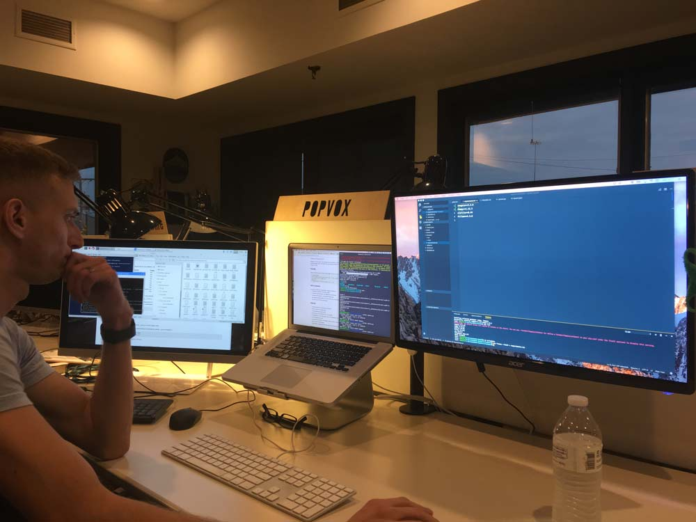
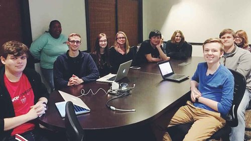
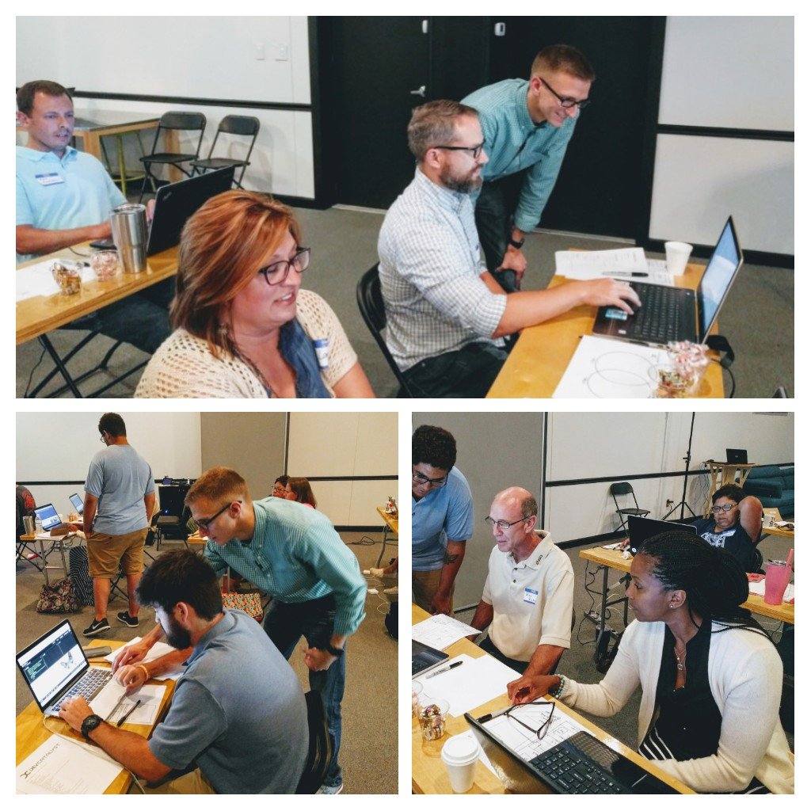
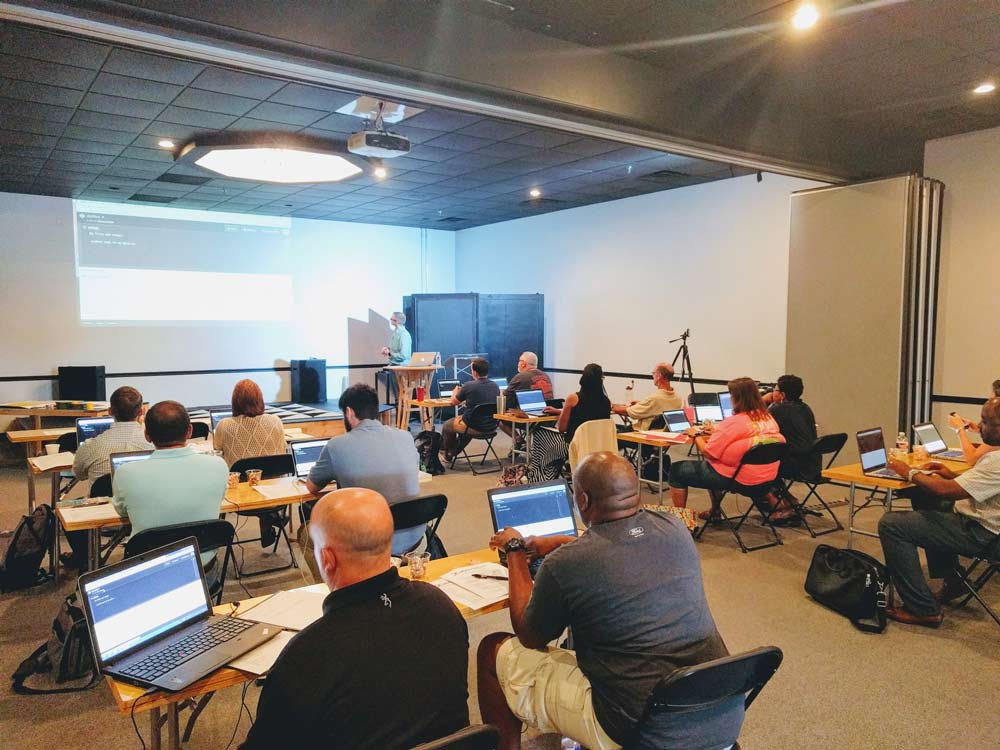
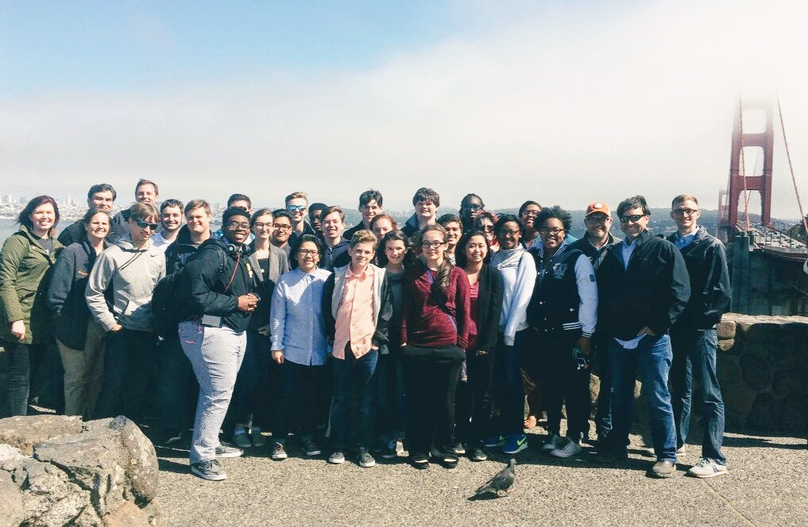
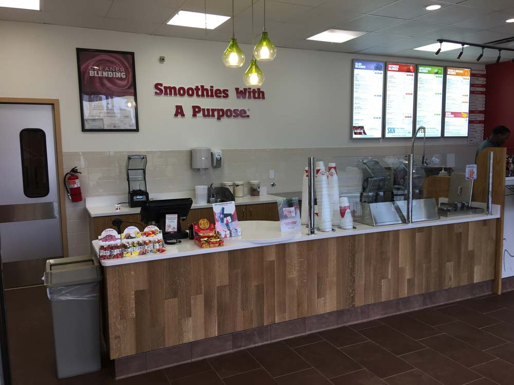
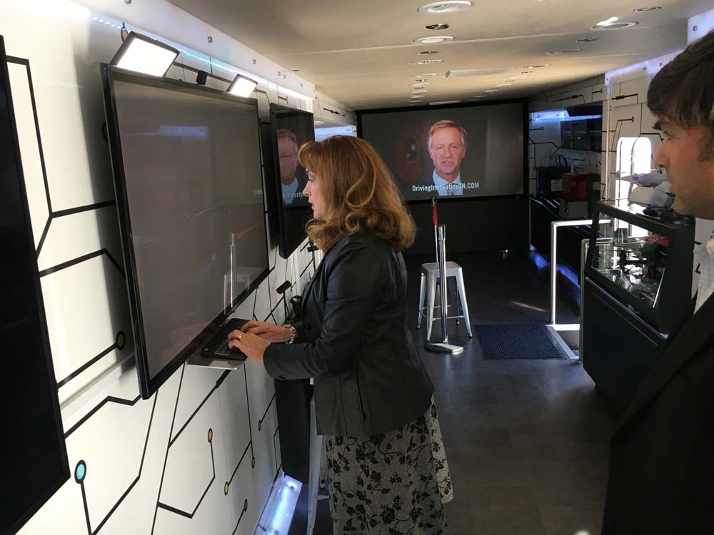

My 2017 Review
With goals set last year, and 12 months past, let’s see what my 2017 looked like.
Goals set for 2017
- lead a meetup
- teach coding workshops
- attend 2 conferences
- 3 books a month
- mentor new coders
- 7 streams of income
Time tracking metrics first: tracked in Toggl
- 1988 hours with Sodium Halogen
- 120 hours with Smoothie King
- 310 hours from extra work
This is totalling to 60 five-day work weeks. 😣 🤑

Income streams
Boom! We did it.
Me:
- Sodium Halogen - lead developer
- Smoothie King - project management
- Wolfgang Computer - 6 websites/apps/computers
- Dev.Catalyst videos*
- Dev.Catalyst workshop*
- theCO Buses - photobooth in Python*
- theCO Workshops*
Molly (wife):
- Fellowship Bible Church - worship academy
- Piano/Voice lessons
* temporary/intermittent
3 Books a month
This goal was a fail (learning experience). 😜
I got stuck on “Bringing Up Boys” for the longest. Dr. Dobson has a ton of examples for parenting, but took such an emotional toll to read the book.
- “Bringing Up Boys” by Dr. James Dobson
- “10X Rule” by Grant Cardone
- “The Life-Changing Magic of Tidying Up” by Marie Kondo
- “The End of Jobs: Money, Meaning and Freedom Without the 9-to-5” by Taylor Pearson
- “The One Minute Manager Meets the Monkey” by Kenneth Blanchard
Lead a meetup

I had the oppurtunity to lead the CO:de meetup every month. There has been an average of 10 people for each meetup.
I’ve done 20 videos for CO:de and some of which have been used for the Dev.Catalyst program. https://www.youtube.com/playlist?list=PLnmaTbl4XQyQfwDVYnq9q5Tf4pNdl1Dh1
Teach coding
This year I have created a workshop for beginner web developers that I’ve lead 4 times this year to 40+ people.


Attend 2 conferences
- C4TK: Code 4 The Kingdom (won hackathon 2nd year in a row)
- Nodevember (5th time to attend)
- signed up for Python conf for 2018 - PyTN
Mentor new coders
With my solo intro into coding, it was a challenging beginning. I was hoping I could encourage others into the industry and share my experience and knowledge.
The workshops, leading a meetup, and now mentoring a couple members in Sodium Halogen, it’s been a good year. I’ve also been meeting with a biology grad from Union University that is wanting to make the switch into developement. We’ve been meeting weekly for a few hours on Wednesday at 6am. He’s been killing it. I’ve been very-very impressed. Keep it up, Zach the Coder!
Unexpected wins
- went to San Fransico with Dev.Catalyst team and competition winning students 😮 👍
- learned a good bit about cryptocurrencies
- made a average 13% ROI on each crypto investment with a total of 105% ROI
- practiced a good bit with ReactJS and VueJS (Javascript frameworks)

Progress made
Some wins along the way…
- healthy and happy family
- bought 2 vehicles in a 3 month period (no more please)
- Sodium Halogen completed 6+ projects
Smoothie King got a remodel

Python Photo booth - 80 hours in 1 month along side Sodium Halogen work.

Warp up
I recommend everyone set goals and keep track. This has been very insightful.
Now I need to set my goals for next year. Join me. 😊
If you liked this or want to chat, get in touch with me.